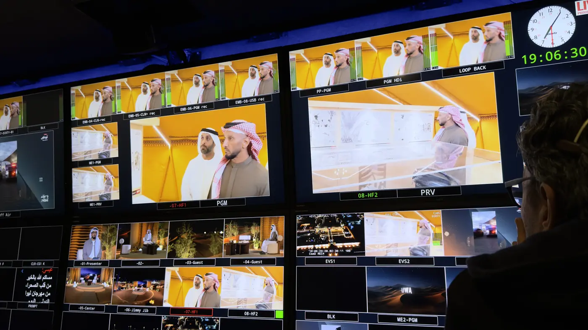
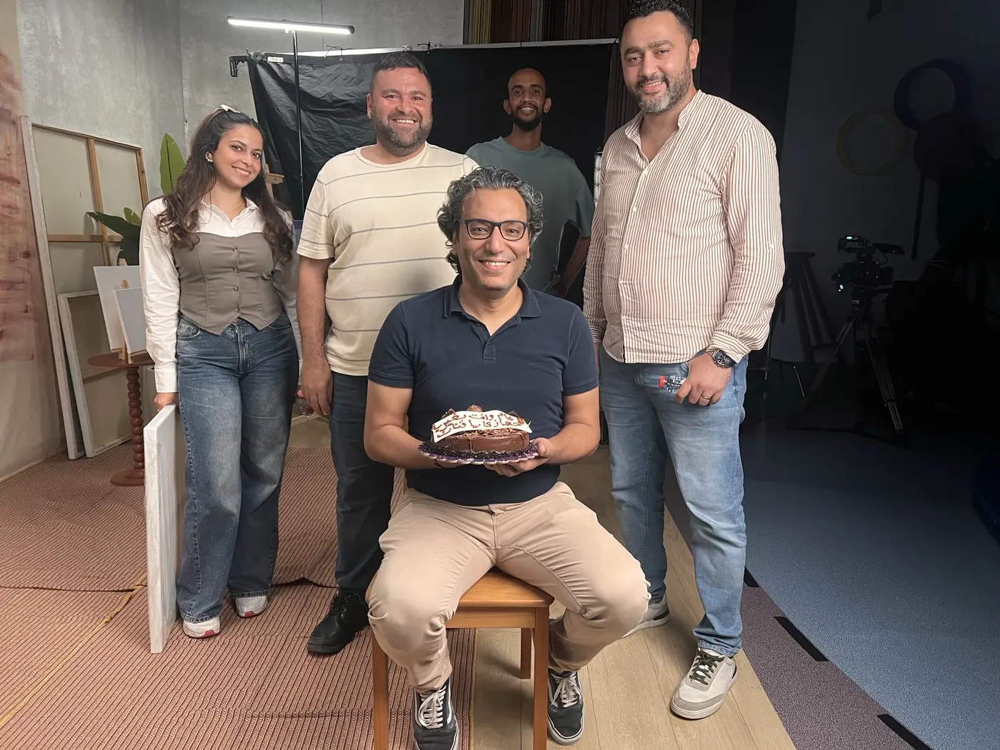

حجازي سعد
معد وكاتب سيناريو تلفزيوني.. بقالي 16 سنة بين غرف الأخبار والاستوديوهات العربية.
كل حاجة بتشوفها على الشاشة.. بدأت في يوم بكلمتين على ورقة.

قبل الهوا..
أنا حجازي سعد.. معد وكاتب سيناريو تلفزيوني في شبكة أبوظبي للإعلام.
بدأت مع الخبر، ووصلت للكاميرا.. ومن ساعتها وأنا عارف إن فيه دايما حكاية مستنية تتقال.
- 16 سنةمن غرف الأخبار للاستوديوهات
- +15 مشروع تلفزيونيعلى مدار أكتر من 3 سنين
- فصحى.. وإماراتيلكل حكاية صوت يناسبها

غرفة الأخبار
بدايتي كانت في غرف الأخبار.. الخبر مستعجل، والكلمة لازم تبقى في مكانها.
وسط العناوين والأسئلة، الحكايات ليها شكل تاني.. قبل ما تتحول لصوت وصورة.

الاستوديو
وبعدين جيه الاستوديو.. السلك على الأرض، والكشاف فوق، وشاشة مكتوب عليها STBY.
الكلمة هنا ليها صوت وصورة ووقت.. وورا الكادر غرفة تحكم مليانة شاشات، كلها مستنية اللحظة اللي الكلام فيها يطلع على الهوا.

صوتين
فصحى للوثائقي.. وإماراتي للشاشة.
كل مرة بتتغير اللغة، بس الحكاية بتفضل هي اللي بتحدد إزاي تتقال.

50 عاما نصون مكتسبات الوطن
إزاي تحكي تاريخ الحوكمة في الإمارات من غير ما الحكاية تتحول لأرقام وقوانين؟
دوري من الفكرة للبحث، كتبت السيناريو والتعليق الصوتي.. وجهزت محاور المقابلات.
إزاي تحكي تاريخ الحوكمة في الإمارات من غير ما تتحول الحكاية لأرقام وقوانين؟ ده كان التحدي وأنا بكتب سيناريو الفيلم الوثائقي لجهاز الإمارات للمحاسبة. رحلة من رؤية الشيخ زايد وبدايات الاتحاد، لحد بناء منظومة بتحافظ على مكتسبات الوطن. حكاية بتتروى من خلال شهادات شخصيات بارزة، زي معالي الدكتور أنور قرقاش، ومعالي زكي نسيبة، ومعالي د. علي النعيمي، وسعادة محمد العبار، والمهندس نجيب ساويرس. حاولت فيها أخلي الواقع هو اللي يتكلم ويحكي للناس.
دوري من الفكرة للبحث، كتبت السيناريو والتعليق الصوتي.. وجهزت محاور المقابلات.
على الهوا
هنا الشغل ماشي زي ترتيب الحلقة.. كل برنامج له دوره.
دي حيطة الكنترول: اختار شاشة وروح لبرنامجها على طول، أو كمّل نزول والنقطة الحمرا هتمشي معاك.

موجات
في الموسم السابع.. الحكايات مع دكاترة وخبراء.
دوري حطيت شكل الموسم.. واخترت الضيوف والمواضيع، وحضرت الأسئلة وسكريبت المذيع.
في الموسم السابع من «موجات» سنة 2026، الحكايات مع دكاترة وخبراء.. أربع حلقات منهم تحت، اختار اللي يشدك.
دوري حطيت شكل الموسم.. واخترت الضيوف والمواضيع، وحضرت الأسئلة وسكريبت المذيع.


أوتو بلس
مفيش طريق قدامنا هنا.. بس فيه كلام كتير عن العربيات.
دوري اشتغلت على شكل البرنامج واختيار ضيوفه ومواضيعه.. وكتبت الأسئلة والسكريبت.
«أوتو بلس» سنة 2025.. 15 حلقة لعشاق العربيات، قاعدين على كنبة الاستوديو. مفيش طريق قدامنا هنا.. بس فيه كلام كتير عن العربيات.
دوري اشتغلت على شكل البرنامج واختيار ضيوفه ومواضيعه.. وكتبت الأسئلة والسكريبت.


تعابير أبوظبي
بندخل مراسم فنانين إماراتيين.. نشوف الفن من المكان اللي بيتعمل فيه، مش من بعيد.
دوري اخترت الفنان والحكاية.. وحضرت الأسئلة، وكتبت السكريبت والتعليق الصوتي.
من 2023، «تعابير أبوظبي» في موسمين بيدخل مراسم فنانين إماراتيين.. نشوف الفن البصري من المكان اللي بيتعمل فيه، مش من بعيد.
دوري اخترت الفنان والحكاية.. وحضرت الأسئلة، وكتبت السكريبت والتعليق الصوتي.

تجربة شيف
وصفات إماراتية بنكهات جاية من مطابخ تانية.
دوري اشتغلت على شكل البرنامج.. وكتبت السكريبت والتعليق الصوتي.
في «تجربة شيف» سنة 2025، الشيف الإيطالي جوزيبي إيانوتي بيقدم وصفات إماراتية بنكهات جاية من مطابخ تانية.. ومعاه سالم سيف المزروعي.
دوري اشتغلت على شكل البرنامج.. وكتبت السكريبت والتعليق الصوتي.

التغطيات الحية
مفيش زرار يعيد اللحظة لما الكلام يطلع على الهوا.
دوري خططت للتغطيات.. وكتبت كلام المذيعين على الهوا، والتعليق الصوتي.
من 2024 لـ2026، التغطيات الحية من قلب المناسبة.. عيد الاتحاد 54، والأعياد، ورأس السنة. مفيش زرار يعيد اللحظة لما الكلام يطلع على الهوا.
دوري خططت للتغطيات.. وكتبت كلام المذيعين على الهوا، والتعليق الصوتي.
 عيد الاتحاد 54برومو التغطية الخاصة
عيد الاتحاد 54برومو التغطية الخاصة- عيد الاتحاد 54 · التغطيةقائمة تشغيل على يوتيوب
- أكملوا المسيرة · الشيخ محمد بن خليفة آل نهيانقناة الإمارات · مارس 2024
- أكملوا المسيرة · حسن بن محمد الشيخقناة الإمارات · مارس 2024
 من العايدينعيد الفطر · قناة أبوظبي · مارس 2026
من العايدينعيد الفطر · قناة أبوظبي · مارس 2026- من العايدين · فلر عيد الأضحىرحلة أغاني العيد عبر الزمن · يونيو 2025
- من العايدين · كواليس التصويرريل على إنستغرام · يونيو 2025
- فعاليات · فلر لقناة أبوظبيكتبت السكريبت · أبريل 2025

حملة مديم ونمو
يقولون أو ما يقولون، عيالنا ذخرنا ورايتنا.
دوري كتبت سكريبتات الحملة وطورت سيناريوهاتها.
حملة على قناة أبوظبي مع دائرة تنمية المجتمع، لبرنامجي «مديم» و«نمو».. وفكرتها كلها في سطر: يقولون أو ما يقولون، عيالنا ذخرنا ورايتنا.
دوري كتبت سكريبتات الحملة وطورت سيناريوهاتها.

مساء أبوظبي
ضيف في الاستوديو، ومراسل في الميدان، وترند بيخبط على باب الحلقة من غير ميعاد.
دوري جهزت الفقرات والضيوف والترند.. وكتبت أسئلة الضيوف وسكريبت المذيعين.
«مساء أبوظبي».. 6 مواسم على الهوا. ضيف في الاستوديو، ومراسل في الميدان، وترند بيخبط على باب الحلقة من غير ميعاد.
دوري جهزت الفقرات والضيوف والترند.. وكتبت أسئلة الضيوف وسكريبت المذيعين.
- الحلقات كاملةعلى منصة ADMN في STARZPLAY
- مقاطع الموسم السادسأكتر من 200 مقطع · يوتيوب قناة أبوظبي
- حلقة 6 نوفمبر 2026مقطع على يوتيوب
 حلقة 30 أكتوبر 2026انطلاق مهرجان الشيخ زايد
حلقة 30 أكتوبر 2026انطلاق مهرجان الشيخ زايد- روكي.. حلم اتحققتقرير نادي السينما · 2 أكتوبر 2026
- عدنان الطليانيتقرير أيقونات · 24 سبتمبر 2026
- الأب الروحي.. الفيلم اللي كان ممكن ما يشوفش النورتقرير نادي السينما · 16 سبتمبر 2026

نكهات شبابية وسر الطبخة
أكلات كلاسيكية بلمسة حديثة، ووصفات فيها مكون محدش كان متوقعه.
دوري اشتغلت على شكل البرنامجين.. وكتبت السكريبت والتعليق الصوتي.
في رمضان 2025 و2026، «نكهات شبابية» و«سر الطبخة».. 45 حلقة بين أكلات كلاسيكية بلمسة حديثة، ووصفات فيها مكون محدش كان متوقعه.
دوري اشتغلت على شكل البرنامجين.. وكتبت السكريبت والتعليق الصوتي.

آخر الأسبوع
عشان السؤال المعتاد: نروح فين؟ يلاقي إجابة.
دوري جهزت الفقرات والضيوف والترند والأسئلة.. وكتبت السكريبت.
«آخر الأسبوع».. 3 مواسم و37 حلقة، بنلف فيها على فعاليات الإمارات وأماكن الويك إند. عشان السؤال المعتاد: نروح فين؟ يلاقي إجابة.
دوري جهزت الفقرات والضيوف والترند والأسئلة.. وكتبت السكريبت.

اللقطة.. وراها ناس
ورا كل لقطة ناس.. في غرفة التحكم قدام حيطة الشاشات، ووسط كثبان الصحرا، وورا الكاميرا في معرض.
اللي قدام الكاميرا بيبان.. واللي وراها بيسند الحكاية.
تحت الهوا في 50 ثانية

التترات
إعداد وسيناريو: حجازي سعد.
14 عنوان على الشاشة.. وقبلهم 6 محطات في الصحافة والأخبار، من القاهرة لأبوظبي.
على الشاشة
- الفيلم الوثائقيالسيناريو والتعليق الصوتي ومحاور المقابلات50 عاما نصون مكتسبات الوطن · قناة أبوظبي · 2026
- موجاتشكل الموسم والضيوف والأسئلة وسكريبت المذيعالموسم السابع · 2026
- مساء أبوظبيالفقرات والضيوف والترند وسكريبت المذيعين6 مواسم
- تقارير مساء أبوظبيالكتابةأيقونات · أكلة الأسبوع · نادي السينما · غرائب · بالأرقام · كل يوم سؤال · ترانا بنظهر أقوى
- التغطيات الحية والمناسبات الوطنيةالتخطيط وكلام المذيعين والتعليق الصوتيعيد الاتحاد 54 · عيد الفطر وعيد الأضحى · رأس السنة · إطلاق خريطة رمضان 2025 · مهرجان الشيخ زايد · مهرجان ليوا للرطب
- اليوم الوطني الكويتيالحلقة الخاصة وتقاريرها2024
- فلرات القناةالفكرة والكتابةالمناسبات الوطنية والأعياد
- تعابير أبوظبيالفنان والحكاية والأسئلة والسكريبت والتعليق الصوتيموسمين · 26 حلقة · من 2023
- أوتو بلسشكل البرنامج والضيوف والأسئلة والسكريبت2025 · 15 حلقة
- تجربة شيفشكل البرنامج والسكريبت والتعليق الصوتي2025
- نكهات شبابية وسر الطبخةشكل البرنامجين والسكريبت والتعليق الصوتيرمضان · 2025–2026 · 45 حلقة
- آخر الأسبوعالفقرات والضيوف والترند والأسئلة والسكريبت3 مواسم · 37 حلقة
- حملة مديم ونموسكريبتات الحملة وسيناريوهاتهاقناة أبوظبي · مارس 2026
- صباح الإماراتالإعدادالبرنامج الصباحي · 2023
قبل التلفزيون
- Insight Event Managementمحرر أولأبوظبي · 2022–2023
- الشرق للأخبارمنتج أخبار أولدبي · 2020–2022
- العين الإخباريةمنتج أخبار أولأبوظبي · 2017–2020
- صحيفة الخليجمحرر ديسك المنوعاتالشارقة · 2014–2017
- جريدة الوطنمحرر أول، القسم السياسيالقاهرة · 2012–2014
- الشروقصحفي وصانع محتوىالقاهرة · 2010–2012

وفي الآخر.. سؤال واحد
كل مرة أبدأ، بسأل نفسي: ليه المشاهد هيفضل معانا لحد الآخر؟
يمكن عشان تفصيلة صغيرة، أو سؤال جه في وقته، أو حكاية فتحت باب للتانية. السؤال ده بيفضل معايا.. حتى بعد ما الهوا يخلص.
دي كانت شوية حكايات من اللي اشتغلت عليها.. ولسه في حاجات كتير نفسي أكتبها.
نكمل الحكاية على لينكد إنhegazy.saad@hotmail.com
© 2026 حجازي سعد · اللينكات بتفتح صفحات النشر الأصلية للقنوات والمنصات. · النسخة اللي فاتت